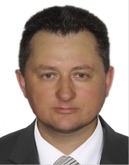

Євсеєв Сергій Петрович
Вчене звання та науковий ступінь
Доктор технічних наук, старший науковий співробітник
Дисципліни
- Захист інформації;
- Безпека програм та даних;
- Безпека банківських систем;
- Комплексні системи захисту інформації;
- Безпека в інформаційно-комунікаційних системах;
- Інформаційні системи та інтернет технології;
- Мережеві технології;
- Комп’ютерна схемотехніка та архітектура комп’ютерів.
Наукові інтереси
Захист банківських інформаційних ресурсів, криптографія на основі крипто-кодових конструкцій на еліптичних кодах.
Коц Григорій Павлович
Вчене звання та науковий ступінь
Кандидат економічних наук, доцент
Посада
Доцент кафедри кібербезпеки та інформаційних технологій
Дисципліни
- Інформаційна безпека держави;
- Основи національної безпеки;
- Інформаційні системи в оподаткуванні;
- Інформаційні системи та технології на підприємстві;
- Управління банківськими систем;
- Інформаційні системи та технології управління;
- Інформаційні системи та технології в економіці.
Наукові інтереси
Захист банківських інформаційних ресурсів, захист інформації на рівні держави, інформаційні системи та технології в економіці та управлінні.
Алексієв Володимир Олегович
Вчене звання та науковий ступінь
Доктор технічних наук, професор
Посада
Професор кафедри кібербезпеки та інформаційних технологій
Дисципліни
- Веб-технології та веб-дизайн;
- Веб-програмування;
- Розподілені сховища даних;
- Бізнес-Intelligence;
- Основи побудови та функціонування мікропроцесорних систем.
Наукові інтереси
Інтернет речей, хмарні обчислення, технології забезпечення захисту веб-ресурсів та сервісів.
Гаврилова Алла Андріївна
Посада
Старший викладач кафедри кібербезпеки та інформаційних технологій
Дисципліни
- Захист інформації;
- Комп’ютерна схемотехніка та архітектура комп’ютерів;
- Основи побудови та захисту сучасних операційних систем;
- Захист систем електронної комерції та мультисервісних систем.
Наукові інтереси
Інформаційні системи та технології в різних сферах бізнесу; аналіз стану ІТ-галузі за регіонами України; розробка та використання електронних навчальних посібників у дистанційному навчанні.
Мілевський Станіслав Валерійович
Вчене звання та науковий ступінь
Кандидат економічних наук за спеціальністю “Економіко-математичне моделювання”, доцент
Посада
Доцент кафедри кібербезпеки та інформаційних технологій
Дисципліни
- Організація та забезпечення баз даних;
- Економічна кібернетика;
- Системи прийняття рішень;
- Економетрика;
- Дослідження операцій;
- Методи і моделі управління конкурентоспроможністю.
Наукові інтереси
Прийняття рішень в складних системах, методи і моделі оцінки потенціалу та рівня розвитку складних систем, моделі управляння конкурентоспроможністю.
Мілов Олександр Володимирович
Вчене звання та науковий ступінь
Кандидат технічних наук за спеціальністю “Електронний iнженiрiнг”; Доцент за кафедрою «Автоматизованих систем управління і економічної інформатики»
Посада
Доцент кафедри кібербезпеки та інформаційних технологій
Дисципліни
- Менеджмент інформаційної безпеки;
- Криптографічні методи захисту інформації;
- Економічна кібернетика;
- Системний аналіз;
- Системи прийняття рішень (методи і моделі);
- Моделювання бізнес-процесів;
- Управління проектами в туризмі (на англійській мові);
- Системний інжіннірінг (англійською мовою);
- Інтелектуальний аналіз даних (Data Mining);
- Міжпредметні тренінги (за напрямками).
Наукові інтереси
Моделі і механізми прийняття і координації рішень в розподілених соціально ‑ економічних системах; агентно – орієнтовані методи моделювання соціально ‑ економічних систем; методи оптимального управління макроекономічними системами.
Шматко Олександр Віталійович
Вчене звання та науковий ступінь
Кандидат технічних наук за спеціальністю “Математичне моделювання та обчислювальні методи”, доцент
Посада
Доцент кафедри кібербезпеки та інформаційних технологій
Дисципліни
- Технологія програмування;
- Організація функціонування та захисту сучасних операційних систем.
Наукові інтереси
Стратегічне управління, управління ризиками, інформаційна безпека, Data Mining, Machine Learning, Text Mining.
Білова Марія Олексіївна
Вчене звання та науковий ступінь
Кандидат технічних наук
Посада
Доцент кафедри кібербезпеки та інформаційних технологій
Дисципліни
- Веб-програмування;
- Веб-технології та веб-дизайн.
Наукові інтереси
Дослідження якості складних об`єктів.
Корольов Роман Володимирович
Вчене звання та науковий ступінь
Кандидат технічних наук за спеціальністю “Інформаційні технології”
Посада
Старший викладач кафедри кібербезпеки та інформаційних технологій
Дисципліни
- Комп’ютерна схемотехніка та архітектура комп’ютерів.
Наукові інтереси
Дослідження якості складних об`єктів.